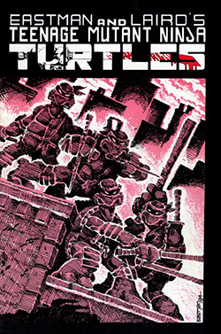

TMNT
As Tartarugas Ninja (Teenage Mutant Ninja Turtles no original, frequentemente abreviado como TMNT),
é um grupo de quatro tartarugas antropomórficas, a quem lhes foi dado o nome de quatro artistas italianos
do Renascimento, e treinadas na arte do ninjutsu por um rato sensei antropomórfico, Splinter.
A partir da sua casa, os esgotos de Nova Iorque, batalham contra criminosos, senhores demoníacos, criaturas mutantes e
alienígenas invasores, enquanto que ao mesmo tempo tentam permanecer escondidos da sociedade.
Num ou noutro ponto e em quase todas as histórias TMNT, o Shredder, líder da secção de Nova Iorque do grupo
criminoso Foot Clan, é o arqui-inimigo de Splinter e das Tartarugas.
Criadas por Kevin Eastman e Peter Laird, a sua primeira aparição foi em 1984 na revista de banda
desenhada Teenage Mutant Ninja Turtles #1 publicada pela Mirage Comics, acabando mais tarde por
expandir para séries animadas de televisão, filmes, videojogos, brinquedos, e muitos outros produtos.
Durante o pico da popularidade da franquia, entre o final da década de 1980 e inicio de 1990, ganharam
fama e sucesso a nível mundial.
Histórico

As Tartarugas foram criadas por Kevin Eastman e Peter Laird, após uma noite em que Eastman humorosamente
desenhou uma tartaruga brandindo nunchakus.
Logo desenvolveram o conceito como uma paródia às obras de Frank Miller: Demolidor e Ronin (que envolviam ninjas, samurais e ficção científica), aos Novos Mutantes
da Marvel Comics (de onde veio a origem mutante) e também a um personagem chamado Cerebus.
Usando fundos de um reembolso fiscal e um empréstimo do tio de Eastman, os dois fundaram a editora Mirage Studios e
lançaram em maio de 1984 uma revista independente.
Apesar de visada como uma história única, a revista teve sua tiragem inicial de 3 mil exemplares esgotada, e as reimpressões tiveram o mesmo sucesso, e assim
se tornou o primeiro número de um título fixo.
Em 1986, quando a série já tinha rendido um role-playing game pela Palladium Books, uma série de miniaturas de chumbo pela Dark Horse Miniatures, e reimpressões coloridas
das revistas originais, um agente de licenciamento se aproximou de Eastman e Laird para visar oportunidades
comerciais. Uma pequena empresa de brinquedos da Califórnia, Playmate Toys, aceitou criar bonecos das Tartarugas,
desde que também houvesse um desenho animado para tornar o conceito mais difundido para o público em geral.
Eventualmente conseguiram a colaboração dos estúdios Murakami-Wolf para desenvolver uma animação, que teve
inicialmente uma minissérie de cinco episódios em 1987 antes de uma temporada completa no ano seguinte,
lançada junto dos brinquedos.
As Tartarugas logo se tornaram um sucesso internacional, com o desenho durando até 1996, inspirando inúmeros produtos licenciados, e no meio-tempo as Tartarugas também foram adaptadas para
o cinema com o filme As Tartarugas Ninja, de 1990, que rendeu duas continuações.
Após o fim do desenho, a produtora Saban criou uma série televisiva com atores, Tartarugas Ninja: A Próxima Mutação,
que durou só uma temporada. As Tartarugas se mantiveram inativas até 2003, quando o estúdio 4Kids fez uma parceria com
a Mirage para criar uma nova animação, com um tom mais maduro e inspirado nos quadrinhos originais.